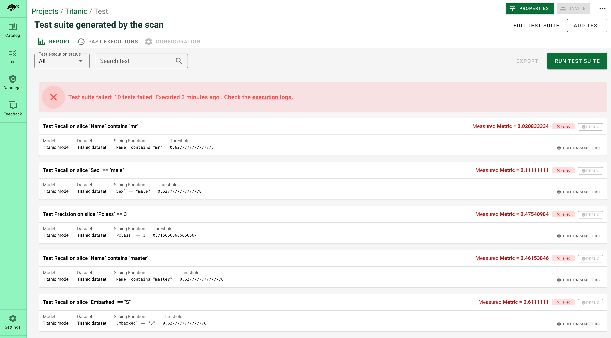

🧪 Test your ML model#
Because ML models depend on data, testing scenarios depend on domain specificities and are often infinite. Giskard provides all the necessary tools that enable you to:
Start writing tests by detecting the vulnerabilities of your model (see the Scan feature to automatically create tests)
Create reproducible test suites with fixtures that integrate the domain knowledge of your model
Load the best tests from the Giskard open-source catalog
Execute a Giskard test#
To create and execute a Giskard test, you have two possibilities. You can either load a test from the Giskard catalog or create your own test by decorating a Python function.
Hint
In order to execute the test provided by Giskard, you first need to wrap your dataset and model to make them compatible with Giskard. See the wrap your model and wrap your dataset sections.
Load and execute a test from the Giskard Catalog#
Hint
Don’t hesitate to execute the code snippets below in your notebook. You can see all our tests in the 📖 Test Catalog
Drift tests#
Testing for drift enables you to make sure your model is still valid by checking if the predictions, and features in inference time are close to the ones used for training the model. Drift measures the difference in statistical distribution between a reference data, often the training set, and a “current” dataset such as the test set or a batch of examples in inference time. To pick the right drift tests, have a look at our resource (numerical data drift or categorical data drift) and drift catalog pages.
Thanks to Giskard, your drift tests can focus on specific data slices by passing a slicing function (generated by the scan for example) as a parameter of your test.
from giskard import demo, Model, Dataset, testing, slicing_function
import pandas as pd
model, df = demo.titanic()
wrapped_model = Model(model=model, model_type="classification")
train_df = Dataset(df=df.head(400), target="Survived", cat_columns=['Pclass', 'Sex', "SibSp", "Parch", "Embarked"])
test_df = Dataset(df=df.tail(400), target="Survived", cat_columns=['Pclass', 'Sex', "SibSp", "Parch", "Embarked"])
# Create a slicing function on females to create more domain-specific tests
@slicing_function(name="females")
def female_slice(row: pd.Series):
return row["Sex"] == "female"
result = testing.test_drift_prediction_ks(
model=wrapped_model,
actual_dataset=test_df,
reference_dataset=train_df,
classification_label="yes",
slicing_function=female_slice,
threshold=0.5,
).execute()
print("Result for 'Classification Probability drift (Kolmogorov-Smirnov):")
print(f"Passed: {result.passed}")
print(f"Metric: {result.metric}")
Performance tests#
Performance tests are probably the most well-known by data scientists. Using Giskard you can focus your performance tests on specific data slices by passing a slicing function (generated by the scan for example) as a parameter of your test. To know more about Giskard performance tests, check out our performance catalog.
from giskard import demo, Model, Dataset, testing, slicing_function
import pandas as pd
model, df = demo.titanic()
wrapped_model = Model(model=model, model_type="classification")
wrapped_dataset = Dataset(
df=df,
target="Survived",
cat_columns=["Pclass", "Sex", "SibSp", "Parch", "Embarked"],
)
# Create a slicing function on females to create more domain-specific tests
@slicing_function(name="females")
def female_slice(row: pd.Series):
return row["Sex"] == "female"
result = testing.test_f1(
dataset=wrapped_dataset,
model=wrapped_model,
slicing_function=female_slice,
).execute()
print(f"result: {result.passed} with metric {result.metric}")
Metamorphic tests#
Metamorphic tests are important for checking the robustness of your model. In a nutshell, it’s about assessing the behavior of your AI model after transformations (changes of input data). As an added benefit, it enables you to implement tests without knowing the ground truth label. To learn more about metamorphic testing (the theory, the different categories and examples), check out our article and metamorphic tests catalog.
With Giskard, creating metamorphic tests becomes simple. You can automatically generate transformations with the scan feature, load them from the catalog, or create your own functions. You can then pass these transformation functions as parameters of your metamorphic test:
from giskard import demo, Model, Dataset, testing, transformation_function
import pandas as pd
model, df = demo.titanic()
wrapped_model = Model(model=model, model_type="classification")
wrapped_dataset = Dataset(
df=df,
target="Survived",
cat_columns=["Pclass", "Sex", "SibSp", "Parch", "Embarked"],
)
# Increase the age by 10% to check if we have more "survived" probability
@transformation_function(name="increase age")
def increase_age(row):
row["Age"] = row["Age"] * 0.1
return row
result = testing.test_metamorphic_invariance(
model=wrapped_model,
dataset=wrapped_dataset,
transformation_function=increase_age
).execute()
print(f"result: {result.passed} with metric {result.metric}")
Statistic tests#
Statistic tests enable you to write some heuristics on the behavior of the model. For instance, checking that the predicted probability is inside a specific range for a given data slice, or checking if an example has a specific classification label. Writing these tests are important to make sure the model has not learned noise or spurious relations. Have a look at our catalog of statistic tests.
from giskard import demo, Model, Dataset, testing
model, df = demo.titanic()
wrapped_model = Model(model=model, model_type="classification")
wrapped_dataset = Dataset(
df=df,
target="Survived",
cat_columns=["Pclass", "Sex", "SibSp", "Parch", "Embarked"],
)
# Let's check if the ratio of examples labeled as "yes" is over 0.7
result = testing.test_right_label(
model=wrapped_model,
dataset=wrapped_dataset,
classification_label="yes",
threshold=0.7,
).execute()
print(f"result: {result.passed} with metric {result.metric}")
Create and execute your own test#
If the test you want to create is not in the Giskard catalog, you can easily write it and add it to a test suite. To do so, you just need to decorate a Python function to turn it into a Giskard test. Make sure that the Python function you’re decorating:
Has typed inputs: types can be Giskard
Model,Dataset,SlicingFunction&TransformationFunctionor any primitiveReturns a
TestResultobject containing all the resulting information of the test:This object must have the
passedargument: a boolean that istrueif the test passes,falseotherwiseProvide the
metricargument: afloatthat reflects the test output. This is key to compare tests results
from giskard import demo, test, Dataset, TestResult, testing
#Creating a data quality test checking if the frequency of a category is under a threshold
@test(name="My Example", tags=["quality", "custom"])
def uniqueness_test_function(dataset: Dataset,
category: str,
column_name: str,
threshold: float = 0.5): #you can put default value to the test
freq_of_cat = dataset.df[column_name].value_counts()[category] / (len(dataset.df))
passed = freq_of_cat < threshold
return TestResult(passed=passed, metric=freq_of_cat)
#Now let's run this test to check if the frequency of "female" is under 70%
_, df = demo.titanic()
wrapped_dataset = Dataset(
df=df,
target="Survived",
cat_columns=["Pclass", "Sex", "SibSp", "Parch", "Embarked"],
)
uniqueness_test_function(dataset=wrapped_dataset,
column_name = "Sex",
category="female",
threshold =0.7
).execute()
Create & Execute a suite#
Test suites are a key feature of Giskard. Executing test suites can be useful for:
Comparing different models: In this case, you should define your model as input of your test suite. Comparing different models is important:
During production: If you want to automate the retraining process to know if the model you just created is better than the one in production
During development: If you want to compare different model candidates. For example, test suites can be used to find the right hyperparameters of your model during your cross-validation
Comparing different datasets. In this case, you should define your dataset as input of your test suite. Comparing different datasets is important to:
Detect drift between two datasets (i.e. training, testing, production, golden datasets)
monitor your model in production using different batches of datasets
Hint
When adding the tests to your suite, you can choose to not specify some of the parameters of your test function. In this case, you will need to specify these missing parameters when you execute the test suite.
You can also choose to share some input of your test. This is useful if some tests are sharing the same inputs (ex: the same slicing function). In this case you’ll need
Having the model as suite input enables you to compare models while in development (ex: to fine tune your model) or during production (ex: to automate retraining process). In the example below, we create a suite with two simple performance tests. As you see below, we specify all the test parameters except the model to “expose” it as the suite input:
from giskard import demo, Model, Dataset, testing, Suite
model, df = demo.titanic()
wrapped_dataset = Dataset(
df=df,
target="Survived",
cat_columns=["Pclass", "Sex", "SibSp", "Parch", "Embarked"],
)
@slicing_function()
def slice_sex(row: pd.Series, category: str):
return row["Sex"] == category
# Create a suite and add an F1 and an accuracy test for the same slice
# Note that all the parameters are specified except model
# Which means that we will need to specify model everytime we run the suite
suite = (
Suite()
.add_test(
testing.test_f1(
dataset=wrapped_dataset, slicing_function=slice_sex(category="male")
)
)
.add_test(
testing.test_accuracy(
dataset=wrapped_dataset, slicing_function=slice_sex(category="female")
)
)
)
# Create our first model
my_first_model = Model(model=model, model_type="classification")
# Run the suite by specifying our model and display the results
passed_first, results_first = suite.run(model=my_first_model)
# Create an improved version of our model
my_improved_model = Model(model=model, model_type="classification")
# Run the suite with our new version and check if the results improved
passed_second, results_second = suite.run(model=my_improved_model)
Having the dataset as suite input enables you to follow the behavior of different batches of datasets (monitoring) and detect drift. In the example below, we create a suite with two simple performance tests. As you can see, we specify all the test parameters except the dataset to “expose” it as a the suite input:
import pandas as pd
from giskard import (
demo,
Model,
Dataset,
testing,
Suite,
transformation_function,
slicing_function,
)
model, df = demo.titanic()
wrapped_model = Model(model=model, model_type="classification")
@slicing_function(name="females")
def slice_sex(row: pd.Series):
return row["Sex"] == "female"
# Create our golden dataset. Golden dataset are used as the reference dataset. It can be your training set
golden = Dataset(
df=df,
target="Survived",
cat_columns=["Pclass", "Sex", "SibSp", "Parch", "Embarked"],
)
# The first test focuses specifically on females to make sure there is no drift with respect to the golden dataset
# Note that neither tests specify the actual_dataset parameter
suite = (
Suite()
.add_test(
testing.test_drift_prediction_ks(
model=wrapped_model,
slicing_function=slice_female,
reference_dataset=golden,
classification_label="yes",
)
)
.add_test(
testing.test_drift_prediction_ks(
model=wrapped_model, reference_dataset=golden, classification_label="yes"
)
)
)
# batch_1 can be a first batch of production data
batch_1 = Dataset(
df=df.head(100),
target="Survived",
cat_columns=["Pclass", "Sex", "SibSp", "Parch", "Embarked"],
)
# Run the suite by specifying our model and display the results
passed_1, results_1 = suite.run(actual_dataset=batch_1)
# batch_2 can be a second batch of production data
batch_2 = Dataset(
df=df.tail(100),
target="Survived",
cat_columns=["Pclass", "Sex", "SibSp", "Parch", "Embarked"],
)
# Run the suite with our new version and check if the results improved
passed_2, results_2 = suite.run(actual_dataset=batch_2)
For advanced cases, you may need to define some test inputs that are shared between different tests inside your suite. In this case, you should use the SuiteInput whose parameter are:
The name of the test input (a string)
The type of the test input (
Model,Dataset,SlicingFunction,TransformationFunctionor any other primitive.
In the example below, the data slice female is shared between two performance tests:
from giskard import (
demo,
Model,
Dataset,
testing,
Suite,
SuiteInput,
slicing_function,
SlicingFunction,
)
import pandas as pd
model, df = demo.titanic()
wrapped_model = Model(model=model, model_type="classification")
wrapped_dataset = Dataset(
df=df,
target="Survived",
cat_columns=["Pclass", "Sex", "SibSp", "Parch", "Embarked"],
)
@slicing_function()
def slice_female(row: pd.Series):
return row["Sex"] == "female"
shared_input_female = SuiteInput("female_slice", SlicingFunction)
suite = (
Suite()
.add_test(testing.test_auc(slicing_function=shared_input_female, threshold=0.7))
.add_test(testing.test_f1(slicing_function=shared_input_female, threshold=0.8))
)
suite.run(model=wrapped_model, dataset=wrapped_dataset, female_slice=slice_female)
Upload the suite to the Giskard server#
Upload your suite to the Giskard server to:
Compare models to decide which one to use
Debug your tests to further diagnose issues
Create more domain-specific tests that integrate business feedback
Share the test results with your team
To upload your test suite to the Giskard server, go to the Upload object page.
